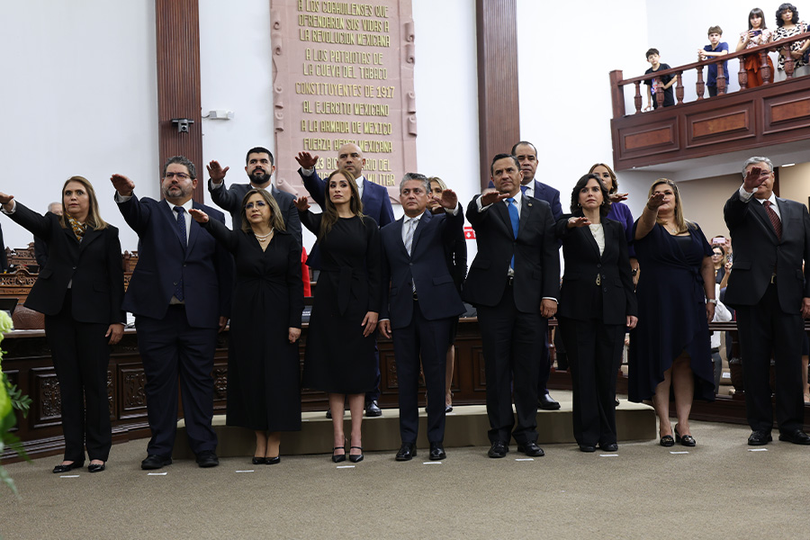
LA REFORMA JUDICIAL EN COAHUILA
En el año 2024, México vivió uno de los procesos de transformación más profundos en la historia de su sistema de justicia. El Congreso de la Unión aprobó en septiembre de dicho año una reforma constitucional que modificó de manera estructural la integración del Poder Judicial de la Federación y por ende, de los Poderes Judiciales Locales. El principal cambio fue la instauración de un sistema de elección popular para juezas, jueces y magistraturas, así como la integración de nuevos órganos para atender las funciones administrativas y disciplinarias que venían ejerciendo los consejos de la judicatura federal y estatales.
En el ámbito local, el Poder Judicial del Estado de Coahuila de Zaragoza inició un proceso de diálogo abierto y propositivo, y trabajo coordinado con el Poder Ejecutivo y el Poder Legislativo, con el fin de analizar los alcances de la reforma judicial y su armonización en la entidad asegurando que esta reforma fortaleciera la impartición de justicia en nuestra entidad.
El objetivo era garantizar que los cambios en el sistema judicial preservaran la eficiencia, imparcialidad e independencia del Poder Judicial, asegurando así una justicia confiable para la ciudadanía, con procesos rigurosos para la selección de personas juzgadoras bajo criterios de mérito y capacidad; respeto a los derechos laborales y humanos de las y los servidores judiciales; fortalecimiento de la paridad de género y la confianza ciudadana; la continuidad con un modelo de justicia centrado en la persona; así como la constitución de un Tribunal de Disciplina Judicial y de un Órgano de Administración Judicial que garanticen imparcialidad, transparencia y eficiencia en la gestión de este poder público.
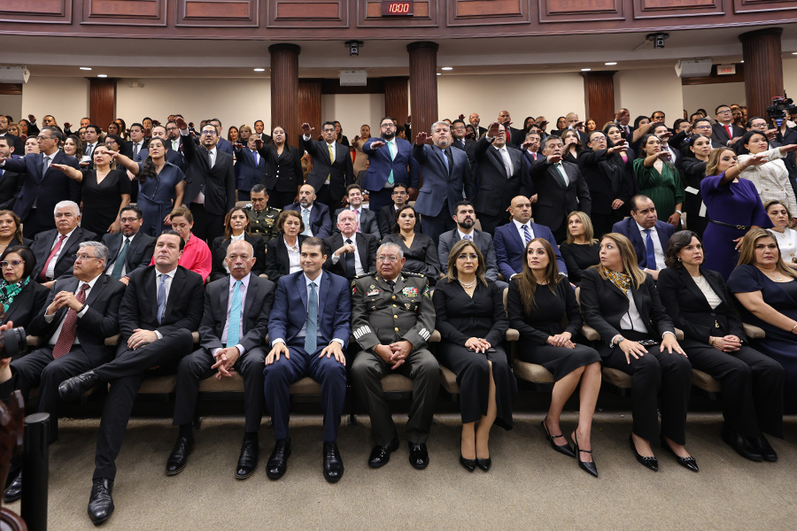
Este trabajo tomó forma con la aprobación de una reforma a la Constitución Política del Estado, publicada en el Periódico Oficial del Estado el 20 de diciembre de 2024, que estableció los lineamientos necesarios para adecuar la normatividad local al nuevo marco constitucional en materia judicial.
Así, con la finalidad de asegurar que quienes aspiran a cargos judiciales de elección popular cuenten con el perfil idóneo —en términos de preparación, experiencia, ética y reputación profesional—, la reforma estableció que cada poder local integrara un Comité de Evaluación para la Inscripción, Evaluación y Dictamen de Candidaturas Judiciales. Este órgano, conformado por personas reconocidas en el ámbito jurídico, tuvo la responsabilidad de recibir expedientes, verificar requisitos y emitir dictámenes sobre la idoneidad de las y los aspirantes, contribuyendo así a elevar los estándares de selección y a reforzar la confianza ciudadana en el sistema de justicia.
La publicación de la reforma y la entrada en vigor de sus disposiciones marcan un momento de renovación institucional que impulsa la modernización del Poder Judicial de Coahuila. Esta adecuación normativa se orienta a consolidar una estructura judicial profesional, con procedimientos más transparentes y mecanismos que promueven la rendición de cuentas y la participación informada de la sociedad.
Posteriormente, el 1 de junio del 2025 se llevaron a cabo las primeras elecciones judiciales, en las que se eligieron a nueve magistrados y magistradas del Tribunal Superior de Justicia del Estado de Coahuila, cuatro magistraturas de los Tribunales Distritales y tres magistraturas del Tribunal de Disciplina Judicial, en lo que respecta a los órganos de primera instancia, fueron electas 90 personas juzgadoras materia familiar, civil, mercantil, penal y laboral. Esta reforma se hizo realidad el 4 de agosto, con la toma de protesta de las autoridades electas y la instalación de los nuevos órganos, estableciendo además un hito histórico al contar por primera vez con una integración paritaria de todos los cargos y entidades del Poder Judicial del Estado de Coahuila de Zaragoza.
Coahuila referente en la implementación de la Reforma Judicial
La organización de la sociedad civil México Evalúa presentó el estudio Radar Judicial: Reformas constitucionales en los estados, un análisis sobre las reformas constitucionales implementadas en 20 entidades federativas que han avanzado en la transformación de su sistema judicial, en las que destaca a Coahuila como un ejemplo en la innovación de mecanismos y modelos de transición judicial, demostrando que es posible diseñar e implementar procesos con libertad y creatividad para mejorar la justicia en el país.
El documento recalcó el ejemplo de Coahuila por haber introducido reformas innovadoras que mitigan los efectos negativos de la reforma judicial nacional, que incluyen: la certificación obligatoria para los aspirantes a cargos judiciales, garantizando que las personas electas posean los conocimientos y habilidades necesarios para desempeñar sus funciones.
Asimismo, resalta la creación de una Unidad Investigadora separada del órgano que resuelve los casos dentro del Tribunal de Disciplina Judicial, evitando la mezcla de funciones de investigación y resolución, y el establecimiento de sanciones específicas para litigantes que intenten dilatar indebidamente los procesos judiciales.
Además, hizo énfasis en la decisión de renovar el 89 por ciento de sus personas juzgadoras, lo que permitía una transición efectiva y ordenada hacia el nuevo sistema judicial. Aunado a esto, el establecimiento de un periodo de campañas de entre 10 y 20 días para la elección de personas juzgadoras, y la prohibición de las precampañas, lo que ayuda a reducir el riesgo de politización de los cargos judiciales y asegura un proceso más transparente y equitativo.
El análisis de México Evalúa subrayó que, a través de la innovación normativa y el compromiso con la independencia judicial, Coahuila marcó el camino hacia un sistema de justicia más eficiente, imparcial y transparente. Este esfuerzo no solo representó un avance para el estado gracias a la coordinación entre Poderes, sino que lo posicionó como un modelo a seguir para otras entidades federativas que buscan adaptar sus propios sistemas judiciales para atender las áreas de oportunidad en el acceso a la justicia, con un enfoque centrado en las personas usuarias.
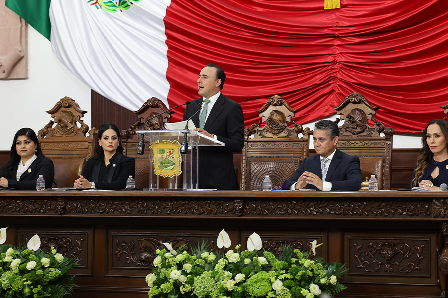
Instalación y operación del Comité de Evaluación
El pasado 3 de enero de 2025, conforme a lo establecido en la Constitución Política del Estado, se instaló el Comité de Evaluación del Poder Judicial de Coahuila para el proceso de selección de las candidaturas a los cargos judiciales en la elección extraordinaria de 2025.
Este Comité estuvo integrado por personas de reconocido prestigio, con amplios conocimientos técnicos y experiencia en la actividad jurídica y académica, como es Rebeca Boone Villarreal, Presidenta de Asociación de Licenciadas en Derecho del Estado de Coahuila; Armando Mercado Hernández, Director General Académico de la Universidad Iberoamericana Campus Torreón; y Víctor Manuel Sánchez Valdés, Secretario General de la Universidad Autónoma de Coahuila.
Este órgano tuvo el carácter honorífico y su misión principal fue garantizar la transparencia, imparcialidad y objetividad en la selección de las personas candidatas a los cargos judiciales.
Entre las atribuciones con las que contaba el Comité estaban el realizar la convocatoria e inscripción de aspirantes, la elegibilidad, la participación y la evaluación de las personas conforme a la garantía del perfil judicial idóneo; recibir los expedientes de las personas aspirantes y dictaminar el cumplimiento de los requisitos de elegibilidad. También, tuvieron que evaluar con el dictamen de idoneidad a las mejores personas que contaran con los conocimientos técnicos necesarios para el desempeño del cargo y se hayan distinguido por su honestidad, buena fama pública, competencia y antecedentes académicos y profesionales en el ejercicio de la actividad jurídica.
Conforme a las Convocatorias Públicas emitidas por los Comités de Evaluación de los Poderes Ejecutivo, Legislativo y Judicial del Estado de Coahuila de Zaragoza, con motivo de la Elección Judicial Extraordinaria 2025, dentro del plazo establecido para ello, se llevaron a cabo en total mil 004 registros en las plataformas correspondientes a los tres poderes.
Cabe destacar que estos registros correspondieron a las solicitudes de 553 personas, en atención a que cada una de ellas podía registrarse ante los tres poderes públicos.
Tabla 1. Registro de aspirantes por poderes públicos
| Cargo | Poder Ejecutivo | Poder Legislativo | Poder Judicial |
|---|---|---|---|
| Magistratura del Tribunal Superior de Justicia | 31 | 24 | 31 |
| Magistratura del Tribunal Disciplinario Judicial | 14 | 10 | 10 |
| Magistraturas de los Tribunales Distritales en el Estado | 15 | 10 | 13 |
| Personas juzgadoras en Materia Civil | 69 | 53 | 71 |
| Personas juzgadoras en Materia Familiar | 90 | 66 | 104 |
| Personas juzgadoras en Materia Laboral | 38 | 22 | 38 |
| Personas juzgadoras en Materia Mercantil | 26 | 15 | 25 |
| Personas juzgadoras en Materia Penal | 74 | 57 | 98 |
Fuente: Poder Judicial del Estado de Coahuila de Zaragoza. 2025.
Durante este proceso correspondió al Instituto de Especialización Judicial certificar el perfil judicial idóneo de las y los aspirantes, así como aplicar el examen de conocimientos a quien así lo solicitara de entre quienes no contaban con dicho perfil, así como remitir a cada poder estatal el listado de las personas que reúnan este perfil idóneo judicial con las mejores personas calificadas, en los términos que establece la Ley.
Cabe destacar que 19 aspirantes fueron los que presentaron el examen correspondiente, de los cuales ocho obtuvieron el perfil judicial idóneo, contribuyendo así a un proceso meritocrático basado en estándares profesionales claros.
En el caso del Comité de Evaluación del Poder Judicial se evaluó como positiva la idoneidad de 93 aspirantes a todos los cargos, información que fue entregada al Tribunal Superior de Justicia para la integración final de los listados a los cuales se añadían funcionarios que estaban en el cargo y que habían manifestado su intención de participar en el proceso, para que el listado fuera remitido a más tardar el 12 de febrero de 2025 al Instituto Electoral de Coahuila.
Tabla 2. Perfil idóneo por poderes públicos
| Poder Ejecutivo | Poder Legislativo | Poder Judicial | ||||
|---|---|---|---|---|---|---|
| Cargo | Idóneos | En el cargo | Idóneos | En el cargo | Idóneos | En el cargo |
| Magistratura del Tribunal Superior de Justicia | 12 | 4 | 11 | 4 | 15 | 4 |
| Magistratura del Tribunal Disciplinario Judicial | 8 | 0 | 6 | 0 | 6 | 0 |
| Magistratura de los Tribunales Distritales en el Estado | 6 | 1 | 5 | 1 | 8 | 1 |
| Personas juzgadoras en Materia Civil | 16 | 8 | 21 | 8 | 30 | 8 |
| Personas juzgadoras en Materia Familiar | 17 | 15 | 21 | 15 | 38 | 15 |
| Personas juzgadoras en Materia Laboral | 7 | 12 | 7 | 12 | 13 | 12 |
| Personas juzgadoras en Materia Mercantil | 4 | 4 | 9 | 4 | 15 | 4 |
| Personas juzgadoras en Materia Penal | 11 | 25 | 14 | 25 | 42 | 25 |
| Total | 81 | 69 | 94 | 69 | 167 | 69 |
Fuente: Poder Judicial del Estado de Coahuila de Zaragoza. 2025.
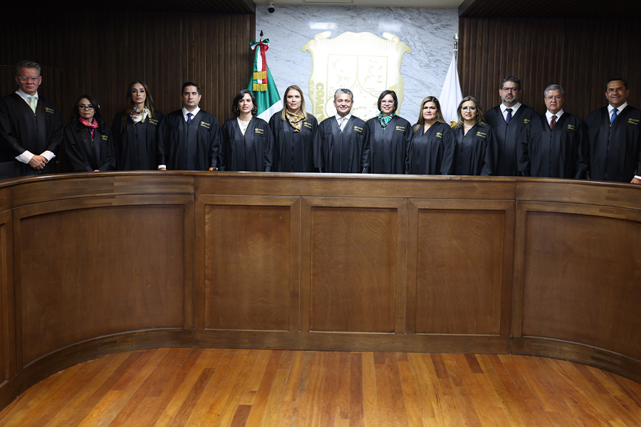
Instalación del Tribunal Superior de Justicia
Tras la jornada electoral del 1 de junio de 2025 en Coahuila, y en cumplimiento de los plazos establecidos por la reforma judicial, el 4 de agosto en sesión solemne en el Congreso del Estado, se llevó a cabo la toma de protesta de ley de las nueve magistraturas titulares y suplentes, cuatro magistraturas distritales y 90 personas juzgadoras de primera instancia que resultaron electas, marcando el inicio de sus funciones dentro del Poder Judicial local.
Posteriormente, se realizó la instalación del Pleno del Tribunal Superior de Justicia en la sala de plenos del mismo, en la que por mayoría de votos, las y los integrantes del Pleno del Tribunal Superior de Justicia designaron al Magistrado Miguel Felipe Mery Ayup como Presidente del Tribunal Superior de Justicia, por el periodo que comprende del 4 de agosto de 2025 al 31 de agosto de 2027, esto por única vez al no haber concluido la renovación integral del Poder Judicial de Coahuila, conforme a lo dispuesto por el Artículo Segundo Transitorio de la nueva Ley Orgánica del Poder Judicial del Estado de Coahuila de Zaragoza.
En esa misma tesitura, de conformidad al Artículo 10, fracción segunda y Artículo 13, fracciones tercera, numeral 20 y 21 de la Ley Orgánica, el Tribunal Superior de Justicia funcionará con las Salas que considere necesarias para su correcto funcionamiento jurisdiccional por materias, por lo que se aprobó por unanimidad la creación de la Sala Penal, de la Sala Civil y Mercantil, de la Sala Familiar, con residencia en el municipio de Saltillo, y de la Sala Regional, con jurisdicción en la Región Laguna, y todas conformadas por tres magistraturas.
Dichas salas se conformaron de la siguiente manera: la Sala Civil y Mercantil por la Magistrada María Eugenia Galindo Hernández y los Magistrados Valeriano Valdés Cabello y Vladimir Kaiceros Barranco; la Sala Familiar, integrada por la Magistrada María del Carmen Galván Tello, la Magistrada Adriana del Amor Serna Calderón, y el Magistrado Jesús Homero Flores Mier; la Sala Penal conformada por las Magistradas Gricelda Elizalde Castellanos e Isadora de Lourdes de Rodríguez Garza y el Magistrado Luis Efrén Ríos Vega; y la Sala Regional compuesta por el Magistrado José Ignacio Máynez Varela y las Magistradas María Luisa Valencia García y Yezka Garza Ramírez.
Conformación de nuevos órganos
En el marco de la reforma a la Ley Orgánica del Poder Judicial del Estado de Coahuila de Zaragoza, publicada el 18 de julio de 2025 en el Periódico Oficial del Estado, se introdujeron cambios sustanciales en la estructura institucional del Poder Judicial, al reorganizar funciones y suprimir al Consejo de la Judicatura y dar paso a órganos especializados con funciones diferenciadas, con el objetivo de cumplir con lo mandatado a nivel federal y modernizar el funcionamiento, fortalecer la autonomía judicial e impulsar mecanismos de disciplina, administración y profesionalización.
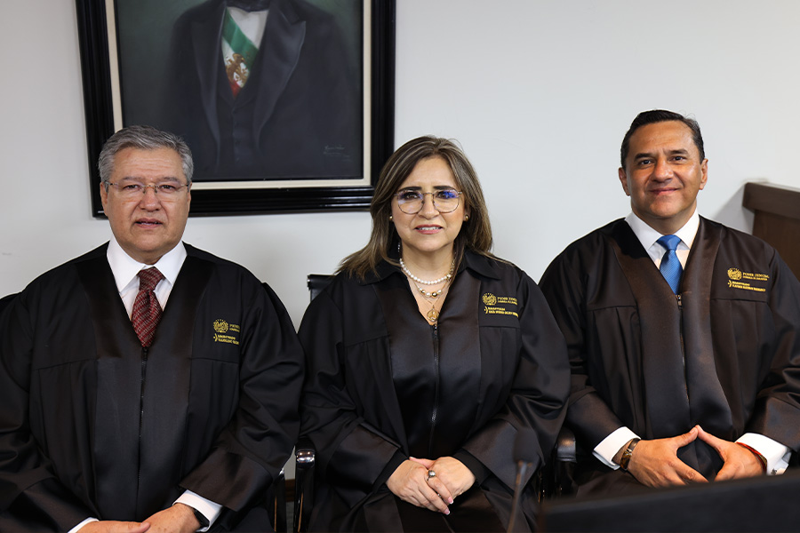
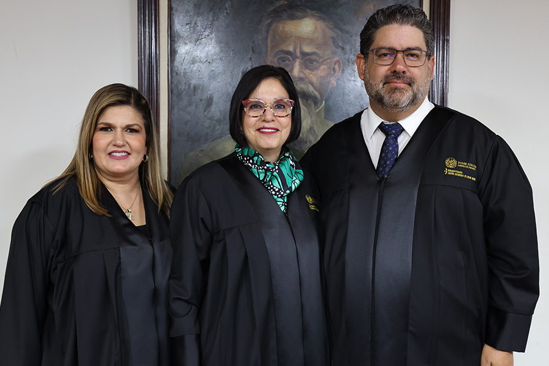
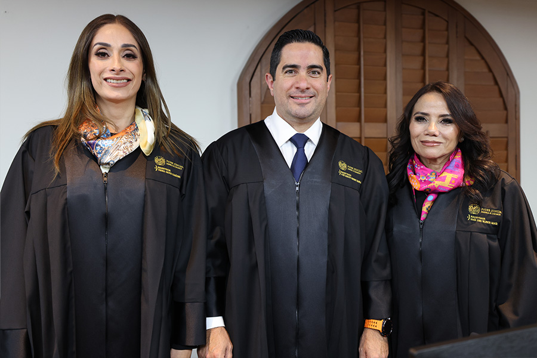
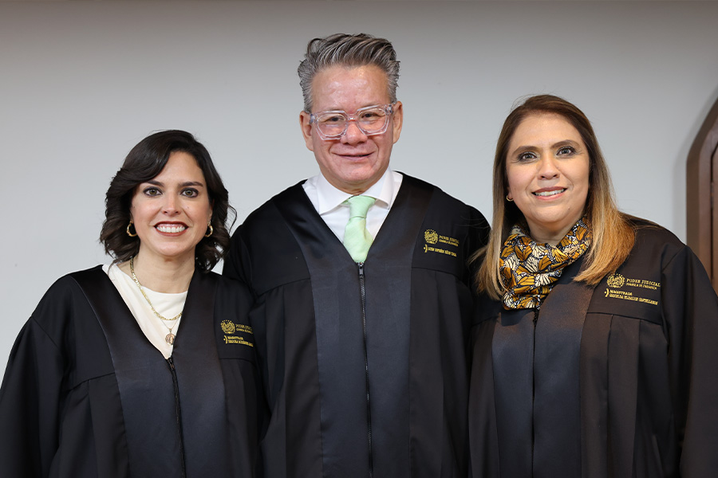
Tribunal de Disciplina Judicial
En el marco de la Reforma Constitucional Federal publicada en septiembre de 2024, orientada a transformar de manera estructural el sistema de justicia en México, en Coahuila iniciamos el proceso de reforma integral del Poder Judicial, con el objetivo de modernizar su funcionamiento, fortalecer su independencia, mejorar los mecanismos de rendición de cuentas y garantizar mayores niveles de transparencia y confianza ciudadana.
Como resultado de dicho proceso de armonización normativa y fortalecimiento institucional, se identificó la necesidad de crear un órgano especializado, dotado de independencia técnica y de gestión, encargado de evaluar y, en su caso, sancionar la conducta de juezas, jueces y demás personas servidoras públicas adscritas al Poder Judicial del Estado.
En atención a lo anterior, el Congreso del Estado de Coahuila de Zaragoza, en ejercicio de sus atribuciones constitucionales, aprobó en el mes de julio de 2025 la nueva Ley Orgánica del Poder Judicial del Estado de Coahuila de Zaragoza, mediante la cual se dispuso la extinción del Consejo de la Judicatura del Estado y se formalizó la creación de una nueva estructura orgánica, integrada por diversos órganos especializados, entre los que destaca el Tribunal de Disciplina Judicial.
De conformidad con la nueva Ley Orgánica, el Tribunal de Disciplina Judicial es el órgano competente para ejercer funciones de vigilancia, disciplina, evaluación y contraloría respecto del personal adscrito a los juzgados de primera instancia y a las demás dependencias del Poder Judicial del Estado, con excepción expresa del Tribunal Superior de Justicia del Estado de Coahuila de Zaragoza, el cual mantiene su propio régimen constitucional.
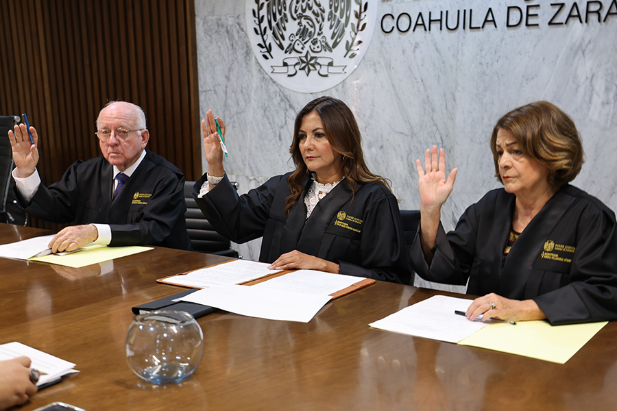
El Tribunal de Disciplina Judicial se encuentra integrado por tres magistraturas (Dulce María Fuentes Mancillas, Magistrada Presidenta del Tribunal; la Magistrada Rebeca Villarreal Gómez; y el Magistrado Rodolfo Rábago Rábago), electas de manera directa por la ciudadanía, quienes desempeñan su encargo por un periodo de nueve años, lo que busca garantizar estabilidad institucional, continuidad en las políticas disciplinarias y un adecuado ejercicio de independencia frente a los demás órganos del Poder Judicial.
Entre sus principales funciones y atribuciones se encuentran:
• La vigilancia, inspección, evaluación y, en su caso, sanción de las faltas administrativas cometidas por el personal adscrito al Poder Judicial del Estado de Coahuila de Zaragoza, conforme a la normatividad aplicable.
• Fungir como autoridad garante del Poder Judicial del Estado, en los términos de la Ley General de Transparencia y Acceso a la Información Pública.
• Formar parte del Comité Coordinador del Sistema Estatal Anticorrupción del Estado.
Su instalación se llevó a cabo en sesión celebrada por el Tribunal Superior de Justicia del Estado de Coahuila de Zaragoza lo que marca una transformación relevante en el sistema de justicia local y contribuye a reforzar la imparcialidad institucional, e incrementar la confianza ciudadana.
A la fecha, el Tribunal de Disciplina Judicial, ha celebrado ocho sesiones, en las que ha iniciado el ejercicio de sus atribuciones conforme a la nueva Ley Orgánica del Poder Judicial.
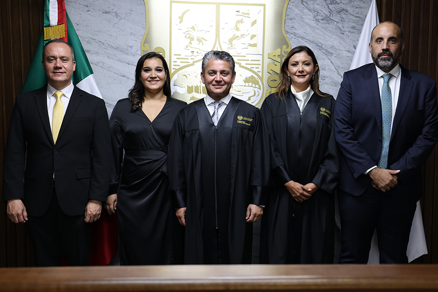
Órgano de Administración Judicial
El Órgano de Administración Judicial es una instancia con independencia técnica y de gestión, responsable de la administración general, la carrera judicial, del servicio profesional y de los servicios no jurisdiccionales del Poder Judicial. El Pleno del Órgano de Administración Judicial está integrado por cinco personas que durarán en su encargo seis años, de las cuales una es designación del Poder Ejecutivo, por conducto del Gobernador del Estado; otra designada por el Congreso del Estado; y tres más por el Pleno del Tribunal Superior de Justicia del Estado de Coahuila de Zaragoza.
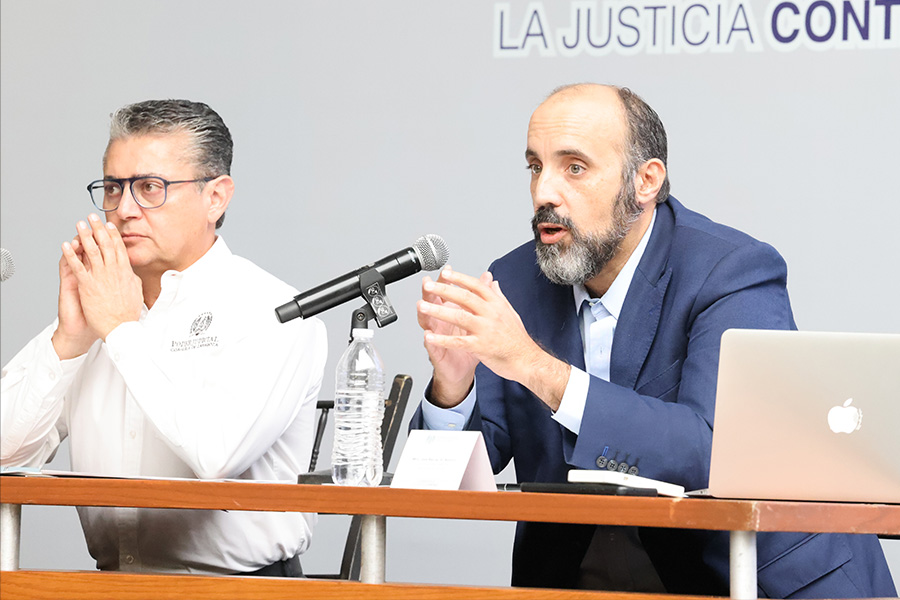
En ese sentido, en la sesión de instalación del Pleno del Tribunal Superior de Justicia, se aprobó por unanimidad que por parte del Poder Judicial el Magistrado Presidente del Tribunal Superior de Justicia Miguel Felipe Mery Ayup, la Magistrada Dulce María Fuentes Mancillas del Tribunal de Disciplina Judicial y José Manuel Gil Navarro (Coordinador del mismo) integren el Órgano de Administración. Además, de Alejandro Luna Fernández, representante del Poder Ejecutivo, y Tamara Garza Garza, Secretaria Técnica y representante del Poder Legislativo.
Entre sus principales competencias se encuentran:
• Determinar la adscripción, movilidad y gestión de magistraturas, personas juzgadoras de primera instancia y demás plazas judiciales.
• Diseñar e implementar procesos de formación, capacitación, evaluación y certificación del personal judicial, así como concursos de oposición para el ingreso y promoción dentro de la carrera judicial.
• Formar y actualizar anualmente la lista de auxiliares de la administración de justicia.
• Proporcionar servicios no jurisdiccionales, incluidos mecanismos de defensoría pública y justicia alternativa.
• Emitir las bases mediante acuerdos generales, para que las adquisiciones, arrendamientos y enajenaciones de todo tipo de bienes, prestación de servicios de cualquier naturaleza y la contratación de obra que realice el Poder Judicial.
• Administrar y ejecutar el presupuesto por órgano o dependencia, según sea el caso.
• Fijar las bases de la política de innovación y sistemas informáticos, así como operar sistemas de información de estadística judicial, bases de datos e indicadores y demás instrumentos para la planeación y toma de decisiones institucionales.
Al asumir las funciones de capacitación, actualización y profesionalización de las personas juzgadoras electas a través del Instituto de Especialización Judicial, destaca la realización de un curso de capacitación integral con una duración de veintiséis horas, en la que se difundieron los conocimientos fundamentales sobre el funcionamiento administrativo interno, los principios, responsabilidades y exigencias inherentes al ejercicio de la función jurisdiccional.
La participación de 109 personas juzgadoras contribuyó a fortalecer capacidades vinculadas con la protección de la autonomía judicial, el ejercicio imparcial del cargo y la garantía de una justicia íntegra, accesible y centrada en las personas.
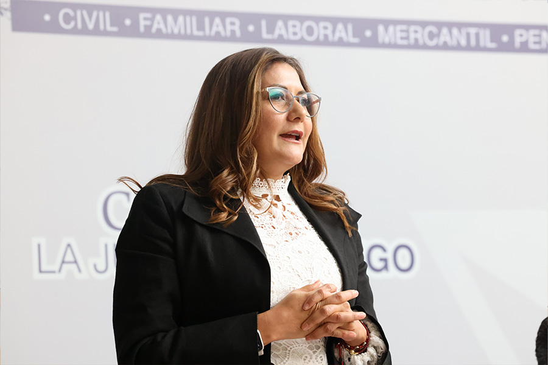
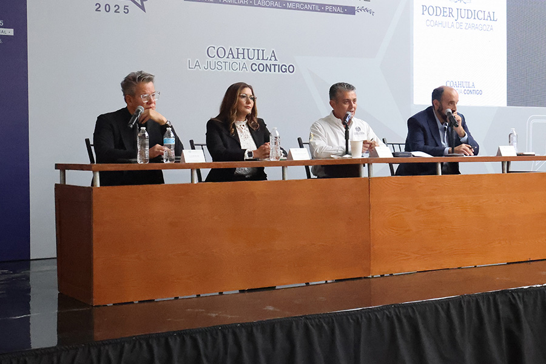
Comisión de Transición
La Ley Orgánica del Poder Judicial del Estado de Coahuila de Zaragoza publicada el 18 de Julio de 2025, establece en su régimen transitorio la conformación de una Comisión de Transición a la cual le corresponde elaborar el Plan de Transición que guía todas las acciones necesarias para implementar la Reforma en tanto se reglamentan, transfieren e implementan, en forma gradual y progresivamente, las atribuciones de los órganos y dependencias del Poder Judicial, lo cual no podrá exceder de un plazo de dos años contados a partir de la instalación de dicha Comisión, lo cual se dio el 4 de agosto de 2025.
La Comisión de Transición está integrada por Miguel Felipe Mery Ayup, Presidente del Tribunal Superior de Justicia, Luis Efrén Ríos Vega, Magistrado de la Sala Penal, Luz Elena Morales Núñez, Presidenta de la Junta de Gobierno del Congreso del Estado de Coahuila y Blas José Flores González, Representante del Poder Ejecutivo y es la instancia responsable para facilitar la coordinación transitoria de los trabajos reglamentarios que establece la Ley Orgánica del Poder Judicial, para implementar la regulación de los diferentes órganos y dependencias del Poder Judicial.
Se conformó además un equipo técnico designado por la Comisión de Transición para desarrollar los trabajos reglamentarios, integrado por Rodrigo González Morales (Poder Judicial), Mariana Alejandra Sánchez Simental (Poder Legislativo), Ana Paulina Delgado Salgado (Poder Ejecutivo), Magdalena López Valdés (Academia Interamericana de Derechos Humanos) y Yessica Esquivel Alonso (Academia Interamericana de Derechos Humanos). Este equipo técnico tiene por objeto coadyuvar en la elaboración, revisión y validación técnica de la agenda reglamentaria.
El Plan de Transición tiene como objetivo establecer la agenda reglamentaria del Poder Judicial, a fin de de precisar los ordenamientos legales a elaborar, así como los responsables, la metodología y el calendario para llevar a cabo los trabajos normativos:
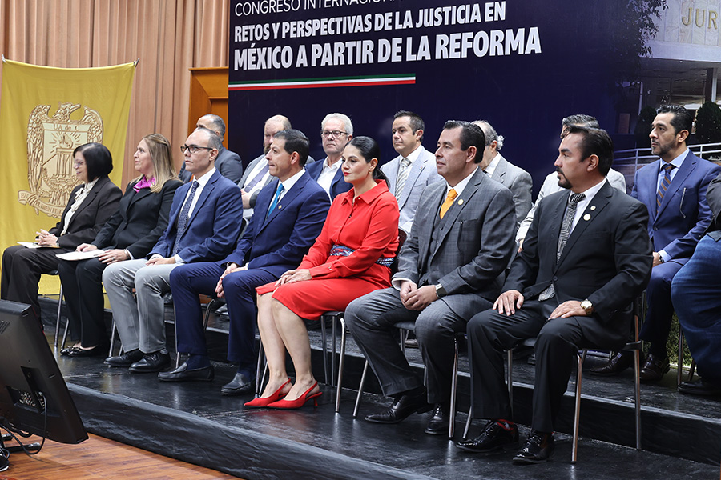
- Iniciativas de Ley, Cartas y otras Reformas.
• Ley de Disciplina Judicial. - Responsables: Dulce María Fuentes Mancillas y equipo técnico. - Tiempo: septiembre-diciembre 2025.
• Carta del Derecho a la Justicia. - Responsables: Luis Efrén Ríos Vega y equipo técnico. - Tiempo: septiembre 2025-junio 2026.
• Carta de la Independencia Judicial. - Responsables: Luis Efrén Ríos Vega y equipo técnico. - Tiempo: septiembre 2025-junio 2026.
• Diagnóstico para las reformas a otros ordenamientos legales. - Responsables: Mariana Alejandra Sánchez Simental, Rodrigo González y equipo técnico. - Tiempo: septiembre-diciembre 2025.
• Revisión de la iniciativa de reforma en materia del Tribunal Laboral Burocrático. - Responsable: Consejería Jurídica del Ejecutivo del Estado (borrador Magistrada Eva de la Fuente). - Tiempo: septiembre-diciembre 2025.
• Elaboración de la propuesta de seguridad social en materia judicial (pensiones). - Responsables: Alejandro Luna Fernández, José Manuel Gil Navarro y Tamara Garza Garza. - Tiempo: septiembre-diciembre 2025.
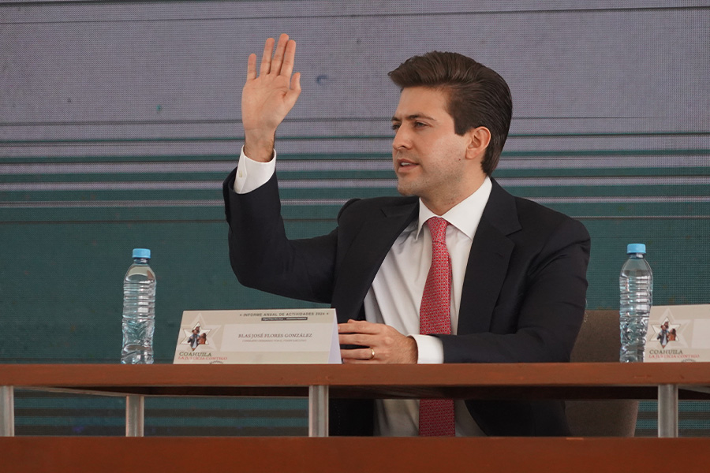
2. Reglamento
• Reglamento del Tribunal Superior de Justicia.
- Responsables: Luis Efrén Ríos Vega, en coordinación con las presidencias de las Salas.
- Tiempo: septiembre-diciembre de 2025.
• Reglamento del Tribunal de Disciplina Judicial. - Responsables: Dulce María Fuentes Mancillas y equipo técnico. - Tiempo: septiembre-diciembre 2025.
• Reglamento del Órgano de Administración Judicial. - Responsables: Alejandro Luna Fernández, Tamara Garza Garza y José Manuel Gil Navarro, con asistencia del equipo técnico. - Tiempo: septiembre-diciembre 2025.
• Reglamento de Juzgados de Primera Instancia (civil y mercantil, familiar, penales y laborales). - Responsables: Rodrigo González Morales y equipo técnico. - Tiempo: septiembre-diciembre 2025.
• Código de Ética. - Responsables: Luis Efrén Ríos Vega y equipo técnico. - Tiempo: septiembre-diciembre 2025.
• Reglamento de Auxiliares de la Administración de Justicia. - Responsables: Sofía Elena Guzmán Esparza, José Manuel Gil Navarro, Rodrigo González y equipo técnico. - Tiempo: septiembre-diciembre 2025.
- Reglamentos, acuerdos, protocolos y demás normas reglamentarias.
• Defensoría Pública.
• Justicia Alternativa.
• Escuela de Formación Judicial.
• Carrera Judicial.
• Justicia Abierta.
• Justicia Digital.
• Archivo Judicial.
• Transparencia judicial.
• Datos personales.
• Protocolo de Sesiones del Pleno y Salas.
• Acuerdos generales del Pleno.
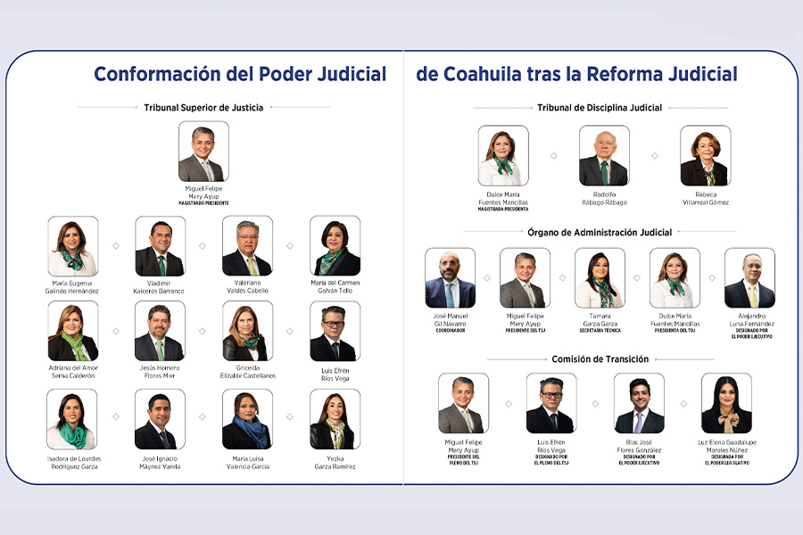